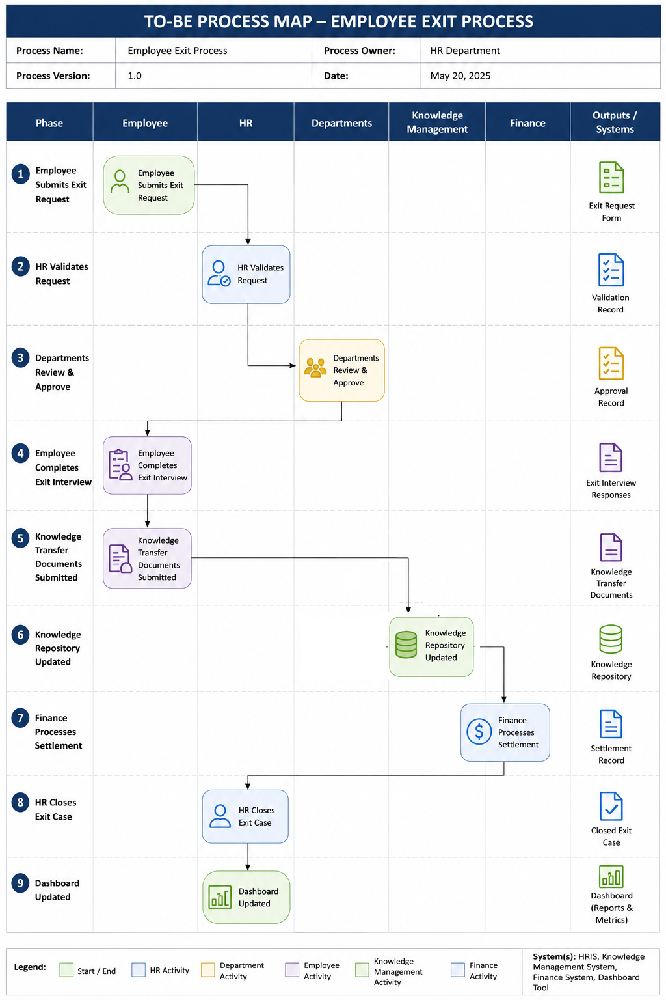

Employee Exit Scheme (EES)
This project involved digitizing and optimizing the employee offboarding lifecycle through automated approvals, compliance management, knowledge transfer, and structured exit processes.

Project Overview
- Project: Employee Exit Scheme (EES)
- Role: Lead Business Analyst / Solution Analyst.
- Organization: NNPC Limited
- Methodology: Agile.
- Project Type: HR Process Automation & Workflow Optimization
- Duration: 5 Months
- Objective: Design and implement a digital Employee Exit Scheme platform to streamline employee separation processes, improve approval visibility, reduce manual processing delays, and enhance compliance tracking.
Business Problem:
The employee exit process was managed manually across multiple departments (HR, Finance, IT, Security), resulting in:
- Delays in processing employee exits
- Lack of centralized tracking
- Poor visibility into approvals
- Inconsistent documentation
- Compliance risks
- Delayed clearance and settlement processing
- Loss of tacit knowledge
- Repeated mistakes
- Reduced knowledge transfer
- Gaps in process continuity
- Limited succession readiness
BA Activities Performed
- Problem Identification.
- Business Need Assessment.
- Scope Definition.
- Stakeholder Interviews.
Current State Analysis
To understand the process, I conducted interviews with HR, Finance, IT, and Legal teams and reviewed the current employee exit workflow.

Key Pain Points Identified
| Issue | Business Impact |
|---|---|
| Paper-based clearance | Slow processing. |
| Manual departmental sign-offs | Lack of visibility/delays. |
| No status tracking | Poor employee experience. |
| Delayed settlements | Dissatisfaction/Reputational Damage. |
| Compliance gaps | Audit risks |
Analysis Techniques Used
- Current State Analysis.
- Process Mapping.
- Root Cause Analysis.
- Workflow Observation.
Stakeholders
A stakeholder analysis was conducted to identify ownership, influence, and communication requirements.
Stakeholder Matrix
| Stakeholder | Role | Interest | Influence |
|---|---|---|---|
| HR Team | Process Owner | High | High |
| Finance Team | Settlement Processing | High | High |
| IT Team | Asset Recovery | High | Medium |
| Security Team | Access Deactivation | High | Medium |
| Legal Team | Compliance Review | Medium | Medium |
| Employees | Compliance Review | High | Low |
| Executive Management | Compliance Review | High | High |
Stakeholder Communication Plan
| Communication | Audience | Frequency |
|---|---|---|
| Requirements Workshops | Process Owners | Weekly |
| Sprint Review | Business Stakeholders | Bi-Weekly |
| Progress Updates | Management | Weekly |
| UAT Sessions | End Users | During Testing |
| Training Sessions | HR Teams | Before Deployment |
BA Activities Performed
- Stakeholder Analysis.
- Communication Planning.
- Stakeholder Alignment.
- Workshop Facilitation
Requirements Gathered
Requirements were gathered through workshops, interviews and process walkthroughs sessions.
Business Requirements (BRD)
BR-001
The system shall provide a centralized mechanism for initiating employee exit requests triggered by resignation, retirement, or termination to ensure standardized exit processing.
BR-002
The system shall automate the routing of employee clearance requests to relevant departments to improve process efficiency, accountability, and turnaround time.
BR-003
The system shall provide real-time visibility into employee exit clearance progress to enhance transparency and enable proactive follow-up by stakeholders.
BR-004
The system shall generate automated notifications and reminders for pending actions, approvals, and overdue tasks to support timely completion of the exit process.
BR-005
The system shall provide a structured exit interview framework to capture employee feedback, reasons for separation, and recommendations for organizational improvement.
BR-006
The system shall facilitate the capture, storage, and management of critical knowledge assets, lessons learned, handover notes, and transition-related information in a centralized and searchable repository to support business continuity, succession planning, and organizational learning.
BR-007
The system shall provide centralized dashboards, reporting, and analytical capabilities to monitor exit cases, process performance, compliance metrics, exit trends, employee feedback patterns, and knowledge retention risks to support management decision-making and continuous improvement.
BR-008
The system shall maintain a complete audit trail of all employee exit activities, approvals, and status changes to support governance, compliance, and accountability.
Functional Requirements
|
Non Functional Requirements
|
BA Activities Performed
- Requirements Elicitation.
- BRD Development.
- Requirements Validation
- Traceability Management.
Analysis Conducted
After gathering requirements, I analyzed process inefficiencies and designed opportunities for improvement.
Gap Analysis
| Current State | Future State |
|---|---|
| Paper forms | Digital registration. |
| Manual routing | Automated workflow |
| Physical sign-off | Electronic approvals |
| No tracking | Real-time visibility |
| Delayed follow-up | Automated reminders |
Knowledge Loss Assessment
A knowledge retention analysis was conducted to identify business risks associated with employee exits.
| Risk Area | Impact |
|---|---|
| Undocumented processes | Operational disruption. |
| Loss of technical expertise | Reduced efficiency |
| Weak handover process | Delayed onboarding for replacements |
| Limited feedback capture | Missed improvement opportunities |
Root Cause Analysis
Problem
Delayed employee exits.
Root Causes:
- Manual document movement
- Dependency on physical approvals
- Lack of workflow automation
- Poor communication between departments
User Stories
User Story 1
As an HR officer, I want to initiate an employee exit request, so that all required departments can begin clearance.
User Story 2
As an HR manager, I want employees to complete an exit interview, so that the organization can capture feedback and improve employee experience.
User Story 3
As a department approver, I want to review and approve exit clearance digitally, so that the process moves faster.
User Story 4
As a department manager, I want exiting staff to document key processes and lessons learned, so that knowledge can be transferred effectively.
User Story 5
As an employee, I want visibility into my exit clearance progress, so that I can track pending actions.
User Story 6
As leadership, I want access to exit reports, analytics, and trends so that I can monitor compliance, track processing timelines, identify organizational risks, and uncover opportunities for continuous improvement.
BA Activities Performed
- Gap Analysis.
- User Story Creation.
- Risk Assessment.
- Exit Theme Analysis.
- Business Rules Analysis.
- Future State Design
Proposed Solution
A centralized Employee Exit Scheme (EES) platform was proposed to automate employee exit workflows, incorporate structured knowledge capture components and improve process transparency.

Agile Workflow
Product Backlog| Epic | Description |
|---|---|
| Exit Initiation | Create employee exit request |
| Clearance Workflow | Departmental approval routing |
| Notifications | Automated reminders. |
| Knowledge Capture | Exit Interview. |
| Reporting | Dashboards and analytics. |
| Administration | Access and configuration. |
Sprints
Sprint 1
Goal:
Exit Request Module
Deliverables:
- Employee Exit Form.
- Workflow Engine Setup.
Sprint 2
Goal:
Department Approval Workflow
Deliverables:
- Approval Interface.
- Notification Engine.
Sprint 3
Goal:
Exit Interview Module
Deliverables:
- Digital Exit Interview Form.
- Exit Analytics Dashboard.
- Exit Theme Analysis Report.
Sprint 4
Goal:
Knowledge Transfer Module
Deliverables:
- Knowledge Transfer Template.
- Ongoing Projects Status Report.
- Knowledge Risk Assessment Report.
Sprint 5
Goal:
Reporting & Analytics
Deliverables:
- Clearance Dashboard.
- Process Analysis.
BA Activities Performed
- Backlog Grooming.
- Sprint Planning.
- User Story Prioritization.
- Acceptance Criteria Definition.
- Stakeholder Demo Sessions.
Business Benefits
The EES solution delivered measurable improvements..
| Benefit Area | Impact |
|---|---|
| Efficiency | Reduced exit processing time |
| Compliance | Improved auditability |
| Visibility | Real-time tracking |
| Employee Experience | Better transparency |
| Productivity | Reduced administrative workload |
| Knowledge Retention | Reduced loss of critical knowledge |
| Succession Readiness | Improved handover quality |
| Continuous Improvement | Better organizational insights |
| Risk Reduction | Reduced operational disruption |
Strategic Benefits
- Standardized employee exit process
- Improved interdepartmental collaboration
- Faster settlements and clearances
- Better compliance governance
Outcome
The Employee Exit Scheme platform transformed a fragmented manual process into a streamlined digital workflow.
Key Outcomes
- Automated employee exit initiation and approvals
- Reduced dependency on physical documentation
- Improved tracking and accountability
- Enhanced compliance and reporting visibility
- Improved employee experience during exit process
- © Untitled
- Design: HTML5 UP